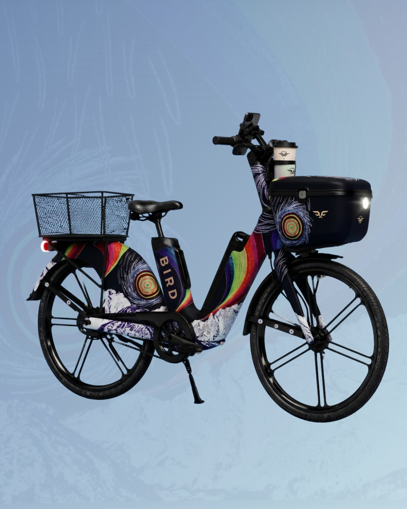
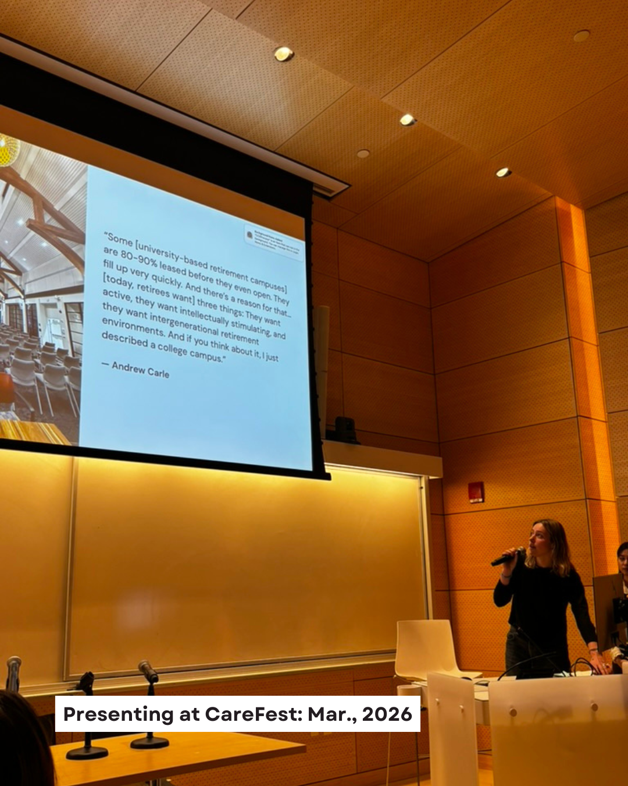
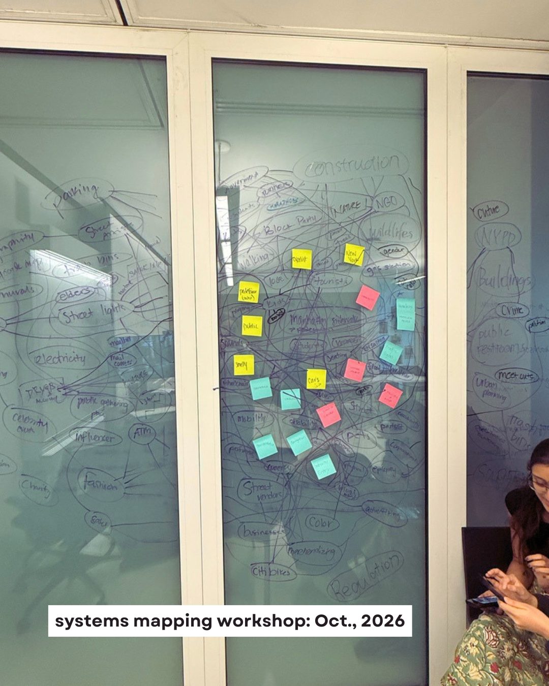
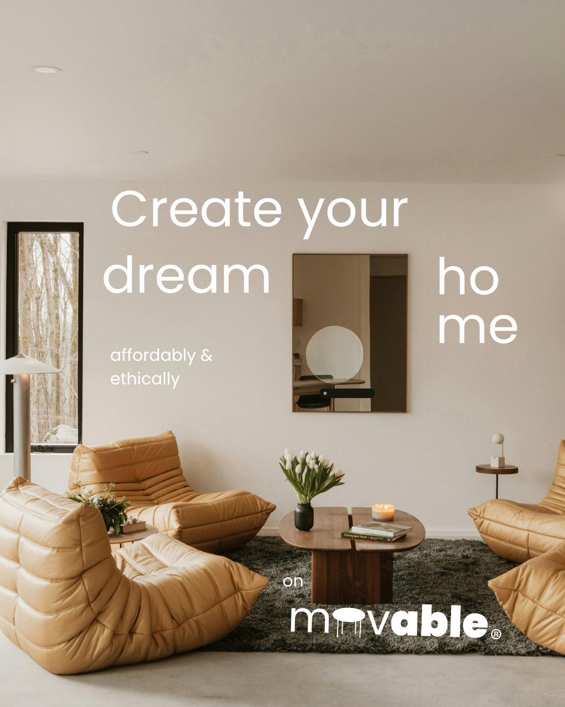

Parsons School of Design
MS-SDM student at Parsons School of Design, applying systems thinking to design and strategy. Recent work includes partnering with Third Lane Micromobility to develop a product and service for non-traditional users and collaborating across New York City and Argentina on intergenerational models of urban living and care.
I work independently and in groups across projects from research to delivery, using an iterative process that is curious, imaginative, and focused.
Areas of study: Design research | product development | systems thinking | design technology | communications | collaborative practice and group facilitation | artificial intelligence and new technologies
Selected Projects



